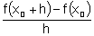
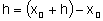
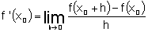
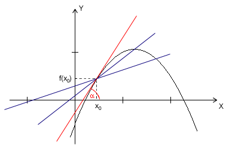
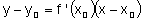
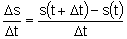
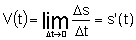

|
|||
|
| • Mechanika » Kinematyka, Dynamika, Praca, moc, energia, Grawitacja, Ruch obrotowy, Statyka, Relatywistyka • Fizyka molekularna i ciepło » Termodynamika, Gazy, Ciecze, Ciała stałe • Elektryczność i magnetyzm » Elektrostatyka, Pole elektrostatyczne, Prąd elektryczny stały, Magnetyzm, Elektromagnetyzm • Zjawiska falowe » Ruch drgający i falowy, Akustyka, Drgania i fale elektromagnetyczne, Optyka • Elementy fizyki wpółczesnej » Dualizm korpuskularno-falowy, Fizyka atomowa, Fizyka jądrowa • Astronomia » Astronomia • Zagadnienia matematyczne » Wektory, Pochodna funkcji, Logarytmy • Tablice » Jednostki wielkości fizycznych, Właściwości fizyczne, Właściwości elektromagnetyczne i falowe, Stałe fizyczne, Tablice matematyczne • O stronie » Autorzy, Bibliografia | |
|
Pochodna funkcji w punkcie
Niech f oznacza funkcję zmiennej x, określoną w pewnym otoczeniu U punktu x0, zaś taką liczbę, że . Iloraz  nazywamy ilorazem różnicowym funkcji f w punkcie x0 dla przyrostu h. Nazwa tego ilorazu pochodzi stąd, że w liczniku mamy różnicę wartości funkcji, zaś w mianowniku różnicę wartości argumentu, gdyż  .
Mamy więc  Jeżeli granica istnieje to mówimy, że funkcja f ma pochodną w punkcie x0, lub że jest różniczkowalna w tym punkcie. Różniczkowalność a ciągłość
Ciągłość funkcji jest warunkiem koniecznym dla istnienia pochodnej, choć nie jest warunkiem wystarczającym. Interpretacja geometryczna pochodnej
Interpretacja geometryczna pochodnej przedstawiona jest na rysunku poniżej. Iloraz różnicowy jest równy tangensowi kąta nachylenia β siecznej AB do osi OX, czyli współczynnikowi kierunkowemu tej siecznej. Pochodna f'(x0), a więc granica ilorazu różnicowego jest równa współczynnikowi kierunkowemu stycznej do krzywej y=f(x) w punkcie A o odciętej x0: , gdzie α oznacza kąt nachylenia tej stycznej do osi OX.  Styczna do krzywej y = f(x) w punkcie P (x0, f(x0)) ma równanie  Interpretacja fizyczna pochodnej
Załóżmy, że punkt P porusza się po osi liczbowej OS i że współrzędna s punktu P jest funkcją czasu t. Tę zależność s od t nazywamy równaniem ruchu. Jeżeli Δt oznacza przyrost czasu, to iloraz różnicowy  jest prędkością średnią punktu P od chwili t do chwili  Pochodna jako funkcja
Jeżeli funkcja f ma pochodną w każdym punkcie x pewnego przedziału (lub innego zbioru punktów), to określona jest w tym przedziale (zbiorze) funkcja zwana krótko pochodną funkcji f. Druga pochodna
Twierdzenia o pochodnych
Jeżeli funkcje f i g mają pochodne w punkcie x, to:
Pochodne funkcji elementarnych
|
| Copyright © 2003- fizyka.kopernik.mielec.pl |